← 포장 연구LABORATORY · FIELD · PROCESS
시험과 연구 과정 사진
재료 준비부터 실내 시험과 현장 관찰까지, 시험별·과정별로 살펴보는 사진 기록입니다.
75 고유사진 · 7개 분야 · 24개 설명
사진은 서로 다른 재료와 시기의 기록입니다. 개별 사진만으로 정확한 조건·인물 역할·동일 배치·성능 향상을 확정하지 않습니다. 회색 가림은 공개 사본의 식별정보 보호 처리입니다.
시험 설명 24개 ↓75 장 표시
일치하는 사진이 없습니다. 검색이나 필터를 초기화해 주세요.
재료·혼합·공시체 준비
8 장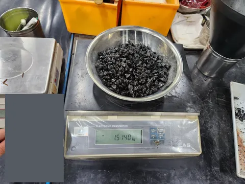
↗질량 측정과 분취 · 1
저울 위 느슨한 아스팔트 혼합물. 재료 식별 카드를 가렸으며 표시 질량만으로 바인더 함량이나 밀도를 확정하지 않습니다.
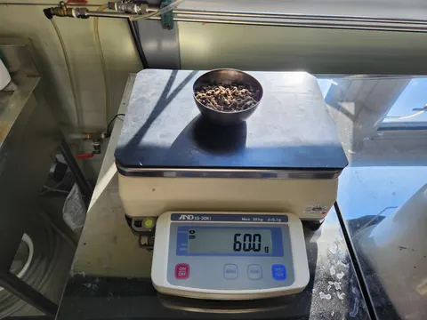
↗질량 측정과 분취 · 5
저울 위 소량의 입상 재료. 재료 종류와 배합비는 준비 기록으로 확인해야 합니다.
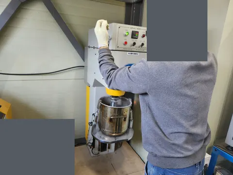
↗혼합 과정 · 4
실험실 아스팔트 믹서 작동 장면. 작업자 머리와 재료 식별 카드를 가렸으며 배합·혼합 조건·개인 역할은 확정하지 않습니다.
 ↗
↗원통 공시체 다짐 장비
실험실 오븐 옆 자동 다짐 장비와 원통 몰드. 다짐 횟수와 공시체 조건은 사진만으로 확정하지 않습니다.
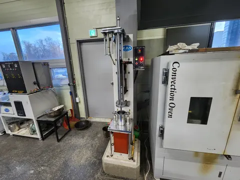
↗다짐 장비 · 3
오븐 옆 실험실 다짐 장비와 배경의 진공 장비. 동일 배치 여부나 시험 조건은 사진으로 확정하지 않습니다.
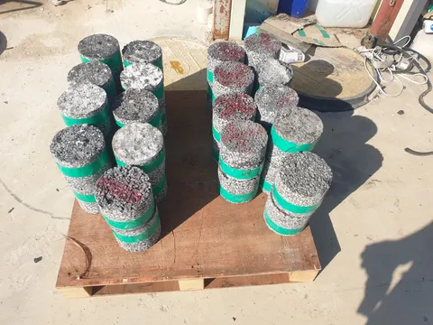
↗원주형 공시체 · 3
팔레트 위에 배열한 원통 포장 코어. 채취 위치·층 두께·혼합물 간 비교는 코어 채취 기록으로 확인해야 합니다.
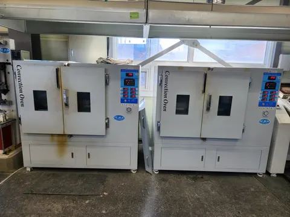
↗실험실 가열 오븐
실험실 열풍식 건조기와 온도 제어부. 표시값만으로 특정 시료의 가열·조건화 온도나 시간을 확정하지 않습니다.
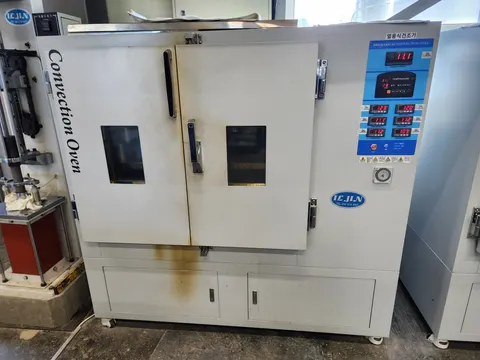
↗실험실 가열 오븐
열풍식 건조기의 전면과 온도 제어부. 시료별 온도·가열 시간은 실험기록을 통해 확인해야 합니다.
밀도와 최대이론비중
10 장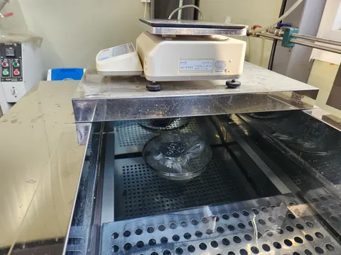
↗밀봉 공시체의 수중 칭량
밀도 관련 칭량 과정에서 저울 아래 물속에 매단 밀봉 원통 공시체. 최종 밀도 값은 사진으로 확정하지 않습니다.
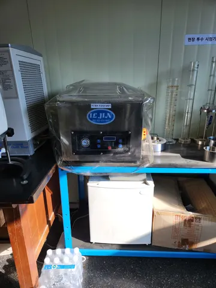
↗진공 밀봉 장치
아스팔트 밀도 시험 준비에 쓰이는 진공 밀봉 장치와 주변 계측 용기. 장비 사진 자체는 밀도값을 제공하지 않습니다.
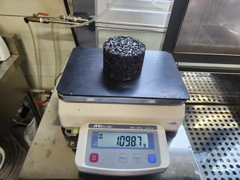
↗원통형 시편 칭량
밀도 측정 과정에서 원통형 혼합물 시편을 저울로 칭량하는 모습. 표시 질량만으로 밀도나 공극률을 산정할 수 없습니다.
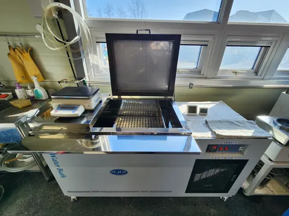
↗수중 칭량 장비
수중 칭량에 사용하는 수조와 저울, 주변 시간·온도 계측기. 사진의 표시 조건을 전체 시험의 공통 조건으로 해석하지 않습니다.
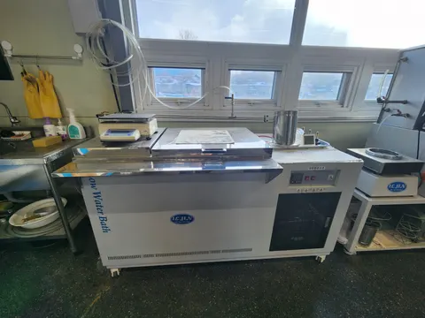
↗실험실 항온수조와 저울
실험실 항온수조와 옆의 저울. 시료 조건 조절·계량 장비를 보여주며, 휠트래킹 장면이나 특정 시료의 조건·시험 결과를 나타내지는 않습니다.
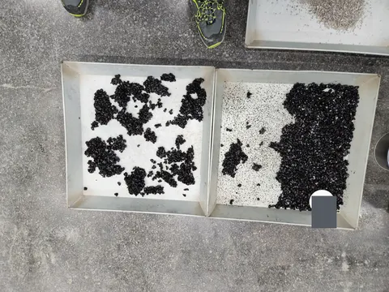
↗느슨한 혼합물 준비 · 1
최대이론밀도 시험 준비 과정에서 트레이에 펼친 덩어리 및 느슨한 혼합물. 배합 표기는 가렸으며 재료 구성과 최종 밀도는 사진으로부터 제시하지 않습니다.
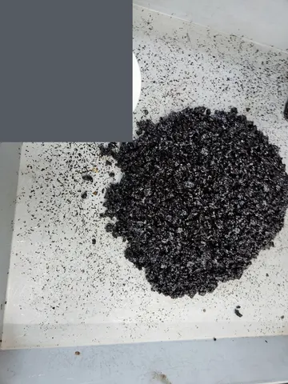
↗느슨한 혼합물 준비 · 2
최대이론밀도 시험 준비 과정의 트레이 속 느슨한 혼합물. 재료·배합 라벨은 가렸으며, 이 사진으로 재료 구성이나 시험 결과를 확정하지 않습니다.
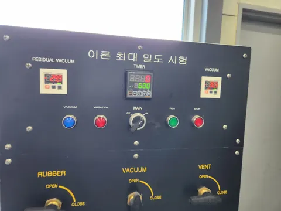
↗최대이론밀도 시험 제어 패널
최대이론밀도 시험 장비의 진공·시간 제어 패널. 표시 숫자를 검증된 시험 조건이나 결과로 제시하지 않습니다.
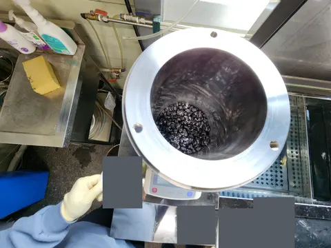
↗최대이론비중 장비·용기 · 4
최대이론밀도 준비 과정에서 저울 위 금속 용기에 담긴 느슨한 혼합물. 식별 정보는 가렸으며 최종 밀도나 배합비를 추정하지 않습니다.
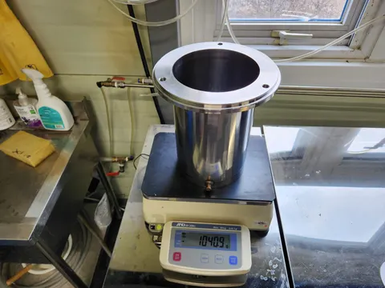
↗최대이론비중 장비·용기 · 5
최대이론밀도 시험 과정에서 저울 위에 놓인 금속 용기. 사진 속 질량 표시만으로 최종 밀도나 비중을 확인할 수 없습니다.
마샬·ITS·칸타브로
8 장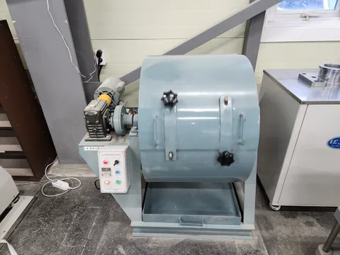
↗칸타브로 시험 과정의 마모 드럼
아카이브의 칸타브로 시험 과정에 포함된 LA 마모 시험 드럼. 드럼 내부, 회전 횟수 및 질량 손실 결과는 사진만으로 확인하지 않습니다.
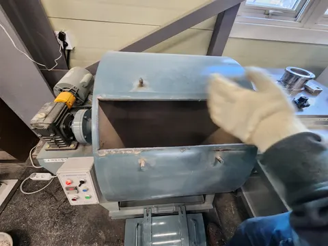
↗칸타브로 드럼 시험 · 3
아카이브의 칸타브로 시험 과정에 포함된 열린 LA 마모시험 드럼과 입구 부근의 장갑 낀 손. 드럼 내용물, 회전 횟수와 질량 손실 결과는 사진만으로 확정하지 않습니다.
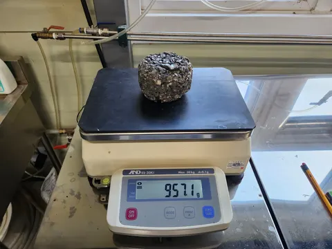
↗칸타브로 질량 기록 · 1
아카이브의 칸타브로 시험 과정에서 저울에 올린 혼합물 시편. 계량 모습을 기록한 사진이며 표시 질량만으로 질량 손실률이나 성능 결과를 확정하지 않습니다.
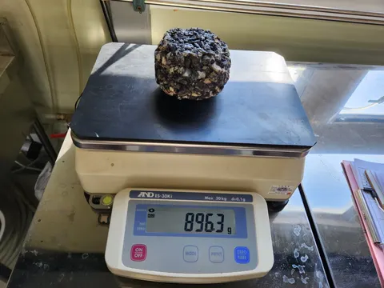
↗칸타브로 질량 기록 · 2
아카이브의 칸타브로 시험 과정에서 계량하는 혼합물 시편. 하나의 저울 표시만으로 시험 전후 대응, 질량 손실이나 비교 성능을 확정하지 않습니다.
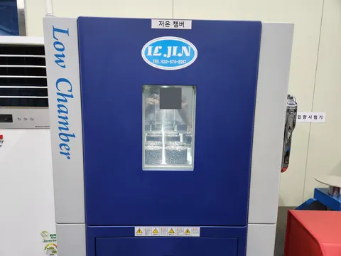
↗칸타브로 온도 조건화 · 1
아카이브의 칸타브로 상태조절 과정에 포함된 저온 챔버 속 원통형 시험체. 온도, 유지 시간 및 질량 손실 결과는 사진만으로 확인하지 않습니다. 반사된 식별 정보는 가렸습니다.
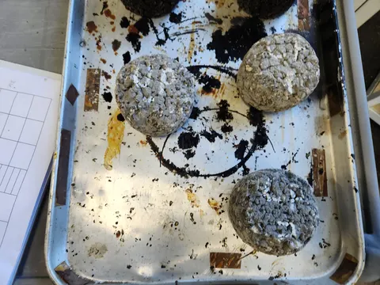
↗칸타브로 공시체 관찰 · 1
아카이브의 칸타브로 과정에서 기록한 원통형 시험체 표면. 외관만으로 배합, 손실량 또는 동일 시험체의 전후 비교를 확정하지 않습니다.
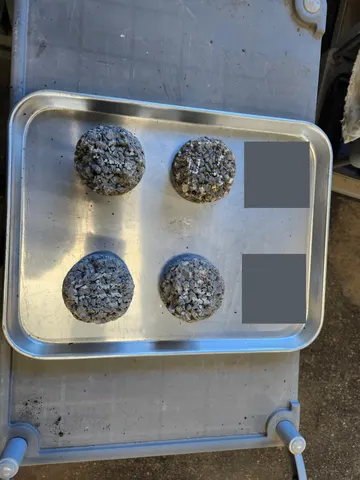
↗칸타브로 공시체 관찰 · 2
원본 표기로 저온 칸타브로 시험과의 관련성이 확인되는 원통형 시험체 네 개. 재료 메모는 가렸으며, 이 사진은 표면 기록이지 정량 손실 결과가 아닙니다.
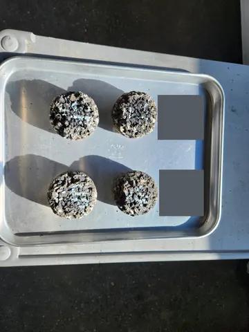
↗칸타브로 공시체 관찰 · 3
원본 표기로 확인한 저온 칸타브로 과정의 원통형 시험체 표면. 메모는 가렸으며 다른 사진과 동일 시험체의 전후 비교로 연결하지 않습니다.
바인더 제조·휨 준비
12 장 ↗
↗가열 용기 속 바인더
가열 용기 속 바인더와 혼합 도구. 개질바인더 제조 맥락은 사용자 설명에 근거하며 개질제 종류는 특정하지 않습니다.
 ↗
↗바인더 재료 준비 · 2
소량의 검은 재료가 담긴 컵 옆의 금속 용기와 뚜껑. 용기 준비 장면이며 화학 성분은 사진으로 특정하지 않습니다.
 ↗
↗바인더 재료 준비 · 3
재료 계량 과정에서 저울 위에 놓은 바인더 컵. 함께 놓인 내부 준비표를 가렸으며 바인더 함량이나 화학 성분은 사진으로 확정하지 않습니다.
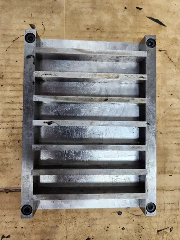
↗바인더 시편 몰드 · 1
막대형 시편 제작용 금속 몰드. 사진만으로 시편 치수나 적용 시험규격을 확정하지 않습니다.
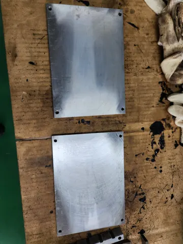
↗바인더 시편 몰드 · 2
시편 몰드의 금속 바닥판과 작업 도구. 사진으로 재료 배합이나 시편 치수를 추정하지 않습니다.
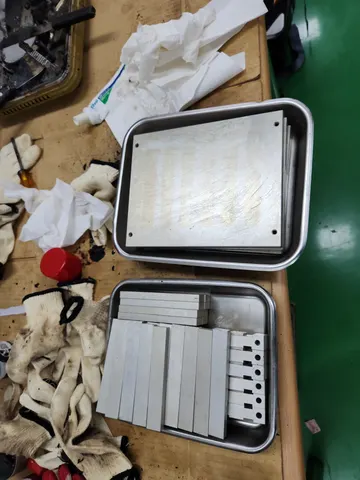
↗바인더 시편 몰드 · 3
트레이에 정리한 시편 몰드 부품과 작업 도구. 조립·준비 단계의 기록입니다.
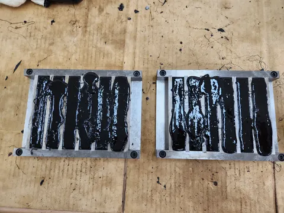
↗바인더가 채워진 보형 몰드
작업대 위 바인더가 채워진 보형 몰드. 배합, 양생 조건 및 BBR 시험 여부는 이 사진만으로 확인되지 않습니다.
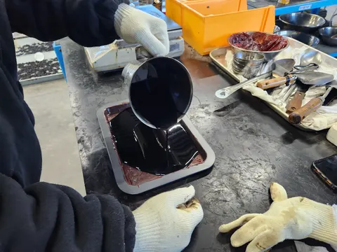
↗바인더 시편 제작 · 3
바인더를 금속 트레이에 붓는 준비 과정. 사진만으로 배합비·온도·개인 역할을 확정하지 않습니다.
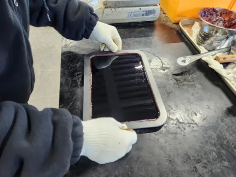
↗바인더 시편 제작 · 4
바인더가 담긴 금속 트레이를 다루는 모습. 재료 상태와 양생 조건은 별도 실험기록 확인이 필요합니다.
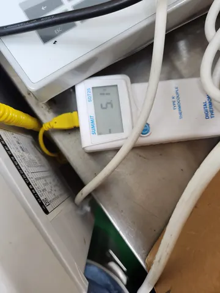
↗바인더 온도 관리 · 2
디지털 열전대 온도계의 표시부. 이 순간의 표시값을 모든 시편의 시험온도로 일반화하지 않습니다.
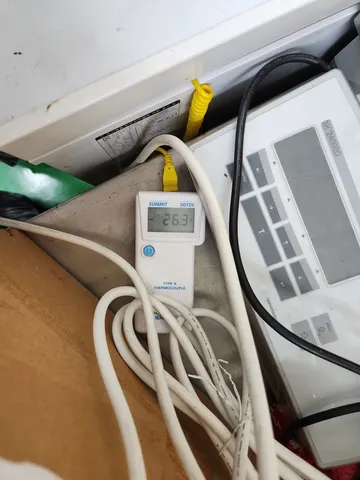
↗바인더 온도 관리 · 3
온도계와 계량 장비가 놓인 작업대. 표시값의 측정 위치·대상은 별도 기록으로 확인해야 합니다.
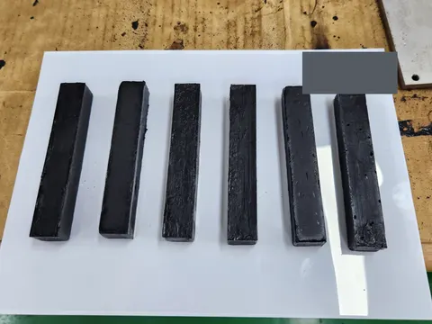
↗제작된 바인더 보 시편
성형 후 배치한 바인더 보형 시편. 배합비와 성능 차이는 사진만으로 판단하지 않습니다. 배경의 재료 메모는 가렸습니다.
매스틱·유동성·휠트래킹
16 장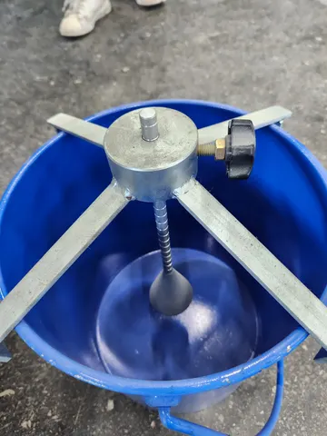
↗류엘 시험 장치
류엘 유동성 시험 장치의 용기와 관입부. 장치 준비 모습이며 측정값이나 합격 여부를 나타내지 않습니다.
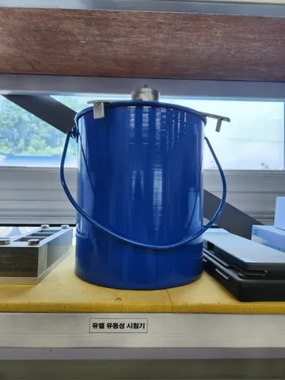
↗류엘 시험 장치
류엘 유동성 시험 장치의 외관. 장비 식별과 구성 확인을 위한 사진이며 결과값은 포함하지 않습니다.
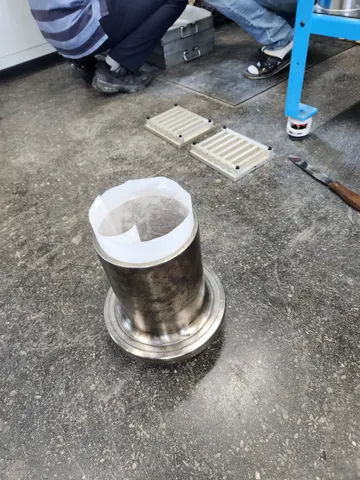
↗원통형·보형 몰드
내부에 종이를 댄 원통형 몰드와 뒤쪽의 보형 몰드. 시료 준비 단계이며 각 몰드의 재료 배합은 특정하지 않습니다.
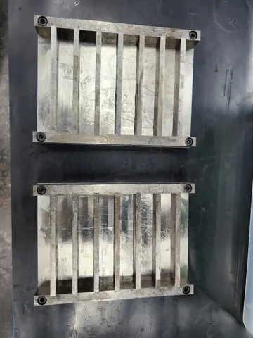
↗보형 몰드
작업대 위의 빈 보형 시편 몰드. 형상만으로 시험규격이나 혼합물 배합을 확정하지 않습니다.
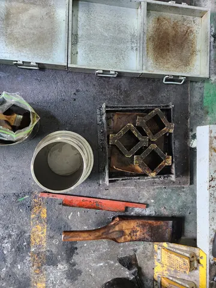
↗시편 몰드와 도구
시료 제작에 쓰이는 판형·원통형·각형 몰드와 정리 도구. 도구의 치수 표기를 시험체 규격으로 해석하지 않습니다.
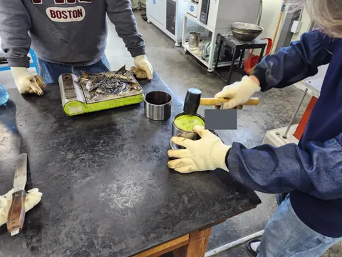
↗원통형 몰드의 시편 준비
원통형 몰드와 고무망치를 이용하는 시료 준비 작업. 개인 신원·역할이나 해당 시료의 배합은 추정하지 않습니다.
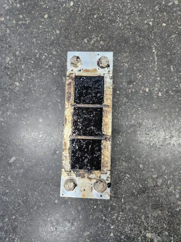
↗시료를 채운 구획형 몰드
혼합물이 채워진 3칸 금속 몰드. 재료 배합과 이후 시험의 연결은 별도 기록이 필요합니다.
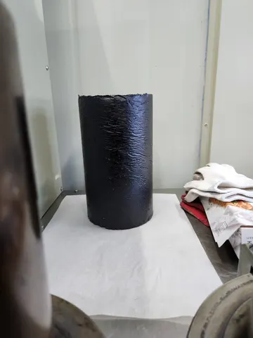
↗탈형한 원통형 시편
탈형 후 세워 둔 원통형 시료. 외관만으로 재료 조성·밀도·성능을 판단하지 않습니다.
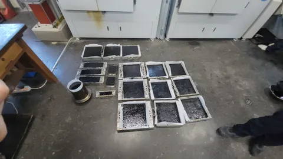
↗시료를 채운 실험실 몰드
판형·보형·원통형 몰드에 준비된 시료의 전체 배치. 함께 놓였다는 사실만으로 동일 배합·동일 배치라고 단정하지 않습니다.
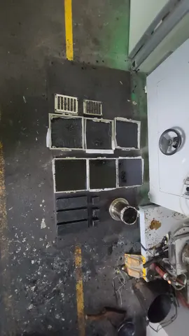
↗몰드와 제작 시편
여러 형상으로 준비한 시료와 몰드. 외관 차이를 재료 성능 차이나 동일 배치의 전후 변화로 해석하지 않습니다.
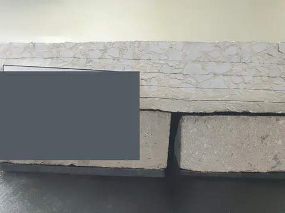
↗복합 시편 관찰
전단·반사균열 모사 자료의 복합 시편 관찰. 내부 결과 표지는 가렸으며, 이 사진을 순수 Mode II 파괴인성이나 성능 우위의 근거로 제시하지 않습니다.
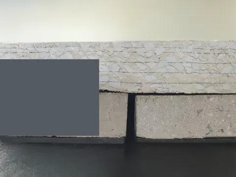
↗복합 시편 관찰
전단·반사균열 모사 자료의 복합 시편 관찰. 내부 결과 표지는 가렸으며, 이 사진을 순수 Mode II 파괴인성이나 성능 우위의 근거로 제시하지 않습니다.
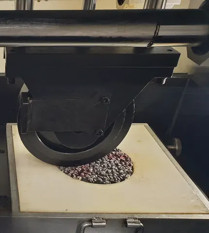
↗휠트래킹 준비와 장착 · 3
사각 고정틀의 원통형 혼합물 시편 위에 놓인 휠트래킹 시험 바퀴. 재료 구성, 시험 조건과 변형 결과는 이 사진만으로 확정하지 않습니다.
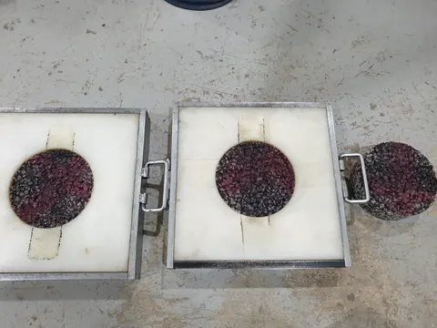
↗휠트래킹 준비와 장착 · 4
사각 고정틀에 놓인 원통형 혼합물 시편과 옆의 시편. 시편·고정틀 준비 모습을 보여주며, 재료 구성이나 동일 배치 여부 및 후속 시험 결과는 확정하지 않습니다.
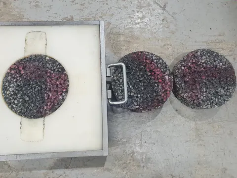
↗휠트래킹 준비와 장착 · 5
사각 고정틀에 놓인 원통형 혼합물 시편과 옆의 두 시편. 재료 구분, 동일 배치 여부 및 시험 결과는 사진만으로 확정하지 않습니다.
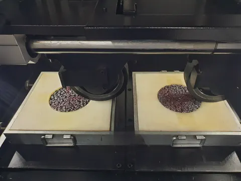
↗휠트래킹 준비와 장착 · 6
사각 고정틀의 원통형 혼합물 시편 위에 놓인 두 휠트래킹 시험 바퀴. 시험 배치를 보여주며, 재료 구성·재하 조건·변형 결과는 확정하지 않습니다.
Texas Overlay 과정
8 장↗Texas Overlay 공시체 준비
Texas Overlay 공시체 준비 과정에서 장착판 위 시편을 추로 누른 모습. 접착제 종류나 양생 조건은 추정하지 않습니다.
↗Overlay 접착·설치 준비 · 2
Overlay 시편 부착을 위한 금속판·접착 영역 준비. 사진은 준비 단계를 보여주며 반복재하나 파괴 결과를 뜻하지 않습니다.
↗Overlay 접착·설치 준비 · 3
금속 자를 이용한 Overlay 부착판의 정렬 확인. 최종 간격과 시험조건은 절차·기록에서 확인해야 합니다.
↗Overlay 접착·설치 준비 · 4
분할 금속판 위에 시편을 부착하고 추를 올린 준비 단계. 접착제 종류·경화 시간·하중 조건은 사진에서 확정하지 않습니다.
↗Texas Overlay 시편 장착
Texas Overlay 시험 장치의 분할 재하판 위에 장착한 혼합물 시편. 재하 이력과 성능 결과는 별도 시험 기록이 필요합니다.
↗Overlay 장치와 시편 · 4
Overlay 장치의 분할판 위에 설치한 혼합물 시편과 관찰 카메라. 재하 시점·반복 횟수·파괴 지표는 사진만으로 확인되지 않습니다.
↗Overlay 시편 관찰 · 1
절단한 혼합물 시편의 표면과 측면 관찰. 두 시편의 배합·동일 배치 여부나 성능 차이는 단정하지 않습니다.
↗Overlay 시편 관찰 · 2
시편 측면 하단의 균열 관찰. 균열 원인·발생 시점이나 파괴 지표를 사진만으로 산정하지 않습니다.
현장 시험과 관찰
13 장↗HWD 표기의 현장 처짐 측정 장비
현장 조사 과정의 트레일러형 낙하하중 처짐 장비로, 장비에는 HWD라고 표기되어 있습니다. 얼굴과 식별 정보는 가렸으며 하중 크기, 재하 순간 또는 개인 역할을 확정하지 않습니다.
↗진자식 미끄럼 저항 시험
포장면에서 수행하는 진자식 미끄럼 저항 시험. 얼굴과 차량 번호판을 가렸으며 BPN 결과나 작업자의 신원은 사진으로 확정하지 않습니다.
↗BPT 미끄럼저항 · 2
현장에서 사용하는 진자식 미끄럼저항 시험 장비. 작업자의 얼굴과 보이는 차량 식별 정보는 가렸습니다. 대표 BPN 값, 제동거리 또는 개인 역할은 이 사진으로 확정하지 않습니다.
↗BPT 미끄럼저항 · 3
포장면 위에 설치한 진자식 미끄럼저항 장비와 주변의 물병·온도계. 현장 및 측정 메모는 가렸으며 대표 미끄럼저항 결과를 추정하지 않습니다.
↗BPT 미끄럼저항 · 4
진자식 미끄럼저항 장비의 눈금과 지침 확대 사진. 한 번 촬영된 지침 위치를 대표 BPN이나 제동거리 결과로 보고하지 않습니다.
↗현장 코어 채취 · 1
코어 채취 지점의 드릴 배럴과 주변 물·슬러리가 보이는 포장 코어 천공 작업. 식별 정보는 가렸습니다. 채취 코어와 후속 실내시험을 연결하려면 별도 기록이 필요합니다.
↗현장 코어 채취 · 2
포장 코어 천공 장비와 드릴 배럴 주변 작업의 근접 사진. 얼굴 부위와 차량 번호는 가렸으며 천공 설정과 후속 시험 연결은 사진만으로 확인하지 않습니다.
↗현장 코어 채취 · 3
포장 시료 채취 중의 코어 드릴 배럴과 주변의 채취 원통 시료. 얼굴과 차량 식별 정보는 가렸으며 별도 근거 없이 이 코어를 후속 실내시험에 연결하지 않습니다.
↗노면 손상 관찰 · 1
교통 콘 주변 포장면의 국부적인 거친 표면과 패인 부분. 사진만으로 원인, 손상 등급, 재료 종류 또는 보수 효과를 확정하지 않습니다.
↗노면 손상 관찰 · 2
포장 표면의 국부적인 거칠고 패인 부분을 가까이 기록한 사진. 원인, 깊이 또는 특정 혼합물·보수와의 관계는 이 사진으로 확정하지 않습니다.
↗노면 손상 관찰 · 3
포장 표면에 걸쳐 보이는 여러 불균일하고 거친 부분. 이 외관 기록만으로 손상 메커니즘, 측정 소성변형 깊이 또는 재료 성능을 확정하지 않습니다.
↗노면 손상 관찰 · 4
포장 표면의 거친 부분과 국부적인 패임을 낮은 각도에서 가까이 기록한 사진. 원인, 치수 및 보수 효과는 별도 관찰이나 측정이 필요합니다.
↗현장 투수 준비·장치 · 2
현장 투수 장비와 받침 주변 작업 모습. 식별 정보와 현장 메모는 가렸습니다. 사진만으로 투수성, 누수 여부 또는 바닥 밀봉의 유효성을 판단하지 않습니다.
시험 설명 24개
일반적인 목적과 측정값·해석 한계입니다. 시험 성적서나 최신 시방 적합성 판정서가 아니며, 아래 조건을 개별 사진에 일괄 적용하지 않습니다.
설명 목차
- 개질바인더 제조 — 호모게나이저·개질제 투입
- 골재 입도·체가름
- 바인더 제조·수지 성분별 계량과 투입
- 재료별 계량·혼합물 분취·질량 측정
- 배합설계·바인더 종류와 함량별 혼합
- 온도 확인·마샬 다짐·원통 공시체 제작
- 양생·시험 전 온도 조건화
- 마샬 안정도·흐름값
- 칸타브로 손실시험 — LA 마모시험기 사용
- 간접인장강도
- 느슨한 혼합물의 최대이론밀도·최대이론비중
- 진공밀봉 공시체 밀도·수중 칭량
- 비밀봉 공시체의 수중 칭량·표면 물기 제거
- 류엘 유동성
- 매스틱 아스팔트 관입량
- 휠트래킹·동적안정도
- Mode II 전단파괴·반사균열 모사
- Texas Overlay — 접착 준비·반사균열 시험
- 바인더 휨시험 — 몰드·제작·완성 시편·재하
- 혼합물 휨 파단변형률·보형 시편(사진 재료 확인필요)
- FWD — 낙하하중 처짐 시험
- 미끄럼 저항 — BPT 진자 시험
- 현장 투수시험 — 기부 밀봉과 표면 유출의 구분
- 학술발표 자료 — 시험 맥락과 출처 연결
개질바인더 제조 — 호모게나이저·개질제 투입
- 목적
- 기본 바인더에 개질제를 혼합·분산시켜 목표 물성을 가진 바인더를 제조하는 단계입니다. 제조 후 물성시험 결과와 연결해야 개질 효과를 평가할 수 있습니다.
- 측정항목·단위
- 투입 질량: g 또는 kg. 개질제 함량: 실제 기록의 기준 질량과 %. 온도: ℃. 혼합 시간: min 또는 h. 회전수: rpm. 제조 사진 자체에는 강성·회복률 등 성능값이 포함되지 않습니다.
- 해석 한계
- 개질제 종류·온도·회전수·시간과 성능 향상을 사진에서 추정하지 않습니다.
바인더 제조·휨 준비 ↗
FHWA-HIF-11-038 ↗
골재 입도·체가름
- 목적
- 굵은골재·잔골재·채움재가 어떤 크기 비율로 구성되어 있는지 확인하고 목표 합성입도를 맞추기 위한 시험입니다. 혼합물의 골재 골격과 공극을 설계하는 출발점입니다.
- 측정항목·단위
- 체 크기: mm 또는 μm. 잔류 질량: g. 누가 잔류율·통과 질량 백분율: %. 합성입도는 재료별 입도와 배합비를 함께 기록합니다.
- 해석 한계
- 각 체 통과율을 해당 혼합물의 입도 범위와 비교합니다. 기준 안에 든다는 사실만으로 모든 성능을 보장하지는 않으므로 다짐성과 강도·내구성 시험을 함께 봅니다. 체 위에 놓인 시료 사진만으로 체가름 완료나 합격을 판단하지 않습니다.
ASTM C136/C136M-19 ↗
바인더 제조·수지 성분별 계량과 투입
- 목적
- 후속 혼합물·휨시험에 사용할 바인더를 정해진 구성으로 준비합니다. 성분별 계량과 투입 순서를 남기면 배치 차이와 시험 결과를 추적할 수 있습니다.
- 측정항목·단위
- 성분별 질량: g 또는 kg. 배합비: 질량비/부피비 등 실제 정의. 온도: ℃. 혼합 및 경과 시간: min 또는 h. 제조일과 배치 ID는 원표기만 기록합니다.
- 해석 한계
- 성분·제조사·시료 약어를 외형만으로 확정하지 않습니다.
바인더 제조·휨 준비 ↗
Related epoxy-asphalt publication ↗
재료별 계량·혼합물 분취·질량 측정
- 목적
- 설계한 재료 비율을 재현하고 각 시험에 필요한 양을 준비합니다. 혼합 전 재료별 계량과 혼합 후 시험용 분취는 서로 다른 단계입니다.
- 측정항목·단위
- 용기·재료·혼합물 질량: g 또는 kg. 배합 함량: 실제 배합표의 정의와 단위. 저울 표시가 읽힐 때만 사진의 숫자를 기록합니다.
- 해석 한계
- 재료별 투입량은 목표 배합을 설명하고, 분취 질량은 어느 시험에 사용한 시료인지 추적하게 합니다. 질량만으로 함량 또는 밀도를 역산하지 않습니다. 저울 화면의 총질량·순질량·영점 여부를 사진만으로 혼동하지 않습니다.
재료·혼합·공시체 준비 ↗
Related epoxy-asphalt publication ↗
배합설계·바인더 종류와 함량별 혼합
- 목적
- 재료 종류, 골재 입도, 바인더 함량을 바꾸어 요구 성능을 만족하는 조합을 찾습니다. 혼합은 골재 표면을 바인더로 고르게 코팅하고 시험용 시료의 조성을 일정하게 만드는 단계입니다.
- 측정항목·단위
- 재료별 질량: g 또는 kg. 바인더 함량: %일 때 반드시 전체 혼합물 기준인지 골재 기준인지 명시. 혼합 온도: ℃. 혼합 시간: min. 공극률·포화도·골재간극률: %.
- 해석 한계
- 서로 다른 재료·배치의 기록일 수 있습니다. 비공개 배합은 공개하지 않습니다.
재료·혼합·공시체 준비 ↗
Related epoxy-asphalt publication ↗
온도 확인·마샬 다짐·원통 공시체 제작
- 목적
- 느슨한 혼합물을 일정한 형태와 다짐 상태의 공시체로 만들어 밀도, 마샬 안정도, 간접인장강도 등 후속 시험이 비교 가능하도록 합니다.
- 측정항목·단위
- 혼합물 온도: ℃. 투입 질량: g. 공시체 지름·높이: mm. 다짐 횟수: 회/면. 다짐 후 밀도·공극률은 별도 시험 결과입니다.
- 해석 한계
- 다짐 이력은 후속 시험 결과의 중요한 비교 조건입니다. 다짐기는 공시체를 만드는 장비이며, 마샬 안정도 시험기는 만들어진 공시체에 하중을 가하는 장비입니다. 자동 다짐기 사진을 마샬 안정도 측정 사진으로 분류하지 않습니다.
재료·혼합·공시체 준비 ↗
ASTM D6926-20 ↗
양생·시험 전 온도 조건화
- 목적
- 양생은 재료의 경화·시간 이력을 관리하는 과정이고, 온도 조건화는 시험 시작 시 시료 온도를 맞추는 과정입니다. 저온 조건화는 칸타브로 손실이나 휨시험 등 목적 시험에 앞서 수행될 수 있습니다.
- 측정항목·단위
- 온도: ℃. 시간: min 또는 h. 시료 상태·수침 여부: 기록 항목. 조건화 자체는 강도나 내구성의 최종 측정값이 아닙니다.
- 해석 한계
- 조건을 맞춘 시료끼리 비교해야 온도·경화 차이를 재료 성능 차이로 오인하지 않습니다. 냉동고 안 공시체는 시험 준비의 증거이며 그 자체로 시험 결과를 뜻하지 않습니다. 사용자는 칸타브로용 저온 조건화를 설명했지만 사진만으로 온도·시간을 추정하지 않습니다.
재료·혼합·공시체 준비 ↗
Related epoxy-asphalt publication ↗
마샬 안정도·흐름값
- 목적
- 다짐된 혼합물이 정해진 조건에서 하중에 저항하는 정도와 그때의 변형을 평가합니다. 배합설계와 재료·양생 조건 비교에 사용합니다.
- 측정항목·단위
- 안정도: N 또는 kN. 흐름값: mm 또는 시험기록에 명시된 환산 단위. 시편 치수·온도·재하 속도도 함께 기록해야 합니다.
- 해석 한계
- 안정도·흐름값의 단위는 원기록 확인사항입니다. 단일 강도값으로 균열·피로 성능을 단정하지 않습니다.
ASTM D6927-22 ↗ · Related epoxy-asphalt publication ↗
칸타브로 손실시험 — LA 마모시험기 사용
- 목적
- 다짐된 아스팔트 혼합물 공시체가 반복적인 충격·마찰을 받을 때 부스러져 떨어지는 정도를 평가합니다. 특히 혼합물의 입자 탈락과 내구성 비교에 사용합니다.
- 측정항목·단위
- 시험 전·후 공시체 질량: g. 손실률: (시험 전 질량 − 시험 후 잔존 공시체 질량) ÷ 시험 전 질량 × 100, %. 회전 수와 시험온도도 함께 기록합니다.
- 해석 한계
- 같은 조건에서는 손실률이 낮을수록 공시체의 탈락 저항이 큽니다. 다른 온도나 공극률의 시료 결과는 조건 차이를 고려해 비교합니다. 장비명은 LA 마모시험기, 수행 시험명은 칸타브로 손실시험으로 구분합니다.
마샬·ITS·칸타브로 ↗
FHWA ↗
간접인장강도
- 목적
- 원통 공시체를 지름 방향으로 압축해 내부에 인장 응력을 발생시키고 균열·인장 파괴에 대한 저항을 비교합니다.
- 측정항목·단위
- 최대하중: N 또는 kN. 지름·두께: mm. 간접인장강도: N/mm² = MPa. 수분 조건화·비조건화 강도의 비(TSR)는 무차원 비 또는 %이며 단독 강도와 구분합니다.
- 해석 한계
- 기존 연구 상세페이지의 공개 시험사진으로 연결합니다. 한 개 강도값에서 TSR을 산출하지 않습니다.
기존 ITS 연구사진 ↗
ASTM D6931-17 ↗ · Related epoxy-asphalt publication ↗
느슨한 혼합물의 최대이론밀도·최대이론비중
- 목적
- 다짐하지 않은 혼합물에서 입자 사이 공기를 제거해, 공극이 없다고 본 상태의 비중·밀도를 구합니다. 다짐 공시체의 공극률 계산에 필요한 기준값입니다.
- 측정항목·단위
- 최대이론비중 Gmm: 무차원. 밀도: g/cm³ 또는 kg/m³처럼 단위를 명시. 질량: g. 물 온도: ℃. 진공을 썼다면 잔류압력·시간을 기록에서 확인합니다.
- 해석 한계
- 같은 배합의 다짐 공시체 벌크비중 Gmb와 비교해 공극률을 산정할 수 있습니다. Gmm와 밀도는 관련되지만 단위가 다른 값이므로 표기를 구분합니다. 물 속 기포를 가열·끓임으로 단정하지 않습니다.
밀도와 최대이론비중 ↗
ASTM D2041/D2041M-19 ↗
진공밀봉 공시체 밀도·수중 칭량
- 목적
- 다짐된 공시체의 벌크비중·밀도를 구해 다짐 상태와 공극률 평가에 사용합니다. 진공밀봉 방법은 공시체를 봉투로 밀봉해 물 침투·배수로 인한 칭량 영향을 관리하는 방식입니다.
- 측정항목·단위
- 벌크비중 Gmb: 무차원. 밀도: g/cm³ 또는 kg/m³. 공기 중·수중 질량: g. 수온: ℃. 공극률: 같은 배합의 Gmm가 있을 때 %.
- 해석 한계
- 측정값은 공시체의 공극을 포함한 부피에 관한 값입니다. 최대이론비중 Gmm와 함께 봐야 공극률·다짐 정도를 해석할 수 있습니다. 느슨한 혼합물의 최대이론밀도 탈기시험과 혼동하지 않습니다.
밀도와 최대이론비중 ↗
ASTM D6752/D6752M-18 ↗
비밀봉 공시체의 수중 칭량·표면 물기 제거
- 목적
- 다짐된 공시체의 물에 의한 부력과 질량을 이용해 벌크비중·밀도를 구하는 과정입니다. 사진에 봉투가 없는 수중 칭량과 표면 물기 제거가 보이면 진공밀봉 과정과 별도로 정리합니다.
- 측정항목·단위
- 칭량값: g. 벌크비중: 무차원. 밀도: g/cm³ 또는 kg/m³. 수온: ℃. 흡수율·공극률 등은 실제 방법과 필요한 입력값이 확인된 경우에만 산정합니다.
- 해석 한계
- 시료의 물 흡수와 배수 상태가 칭량에 영향을 줍니다. 같은 상태로 측정한 값들을 해당 계산식에 넣어야 하며, 서로 다른 상태의 질량을 섞지 않습니다. 수건으로 닦는 사진만으로 SSD 상태 달성이나 ASTM D2726·특정 KS 절차를 확정하지 않습니다.
ASTM D2726/D2726M-19 ↗
류엘 유동성
- 목적
- 가열한 매스틱 아스팔트 혼합물이 시공 중 얼마나 잘 흐르고 충전되는지 평가하는 시공성 지표입니다.
- 측정항목·단위
- 류엘 유동시간: s(초). 측정 시 혼합물 온도: ℃. 교반 시간: min 또는 h. 점도(Pa·s)와 같은 물리량은 아닙니다.
- 해석 한계
- 동일 조건에서는 시간이 짧을수록 관입체 이동이 쉬운 상태입니다. 현장 유동성과 형상 유지에 맞는 범위로 판단해야 하며 무조건 짧은 것이 최선이라고 보지 않습니다. 음성의 ‘리얼/류엘’은 고덕대교 원자료의 ‘류엘 유동성’ 표기를 사용했습니다.
매스틱·유동성·휠트래킹 ↗
Zou 등(2020) ↗
매스틱 아스팔트 관입량
- 목적
- 정해진 온도에서 하중을 받은 매스틱 혼합물이 얼마나 눌려 들어가는지 측정해 변형 저항을 비교합니다.
- 측정항목·단위
- 관입량: mm. 시험온도: ℃. 하중: N 또는 원자료의 kgf. 관입체 면적: cm². 재하시간: min. 기록 양식에 따라 추가 시간 구간의 관입 증가량을 함께 볼 수 있습니다.
- 해석 한계
- 독립적으로 확인한 공개 적합 원사진이 없어 설명만 제공합니다. 촬영된 시험 수행의 증거로 제시하지 않습니다.
원사진과 소유자 아카이브 근거를 검토해 작성한 일반 설명입니다. 비공개 보고서는 재배포하지 않습니다.
휠트래킹·동적안정도
- 목적
- 반복되는 바퀴 하중 아래에서 혼합물이 영구적으로 패이는 소성변형에 얼마나 저항하는지 평가합니다.
- 측정항목·단위
- 변형량·바퀴자국 깊이: mm. 통과횟수: 회. 동적안정도: 회/mm. 온도: ℃. 하중: N 또는 kgf. 계산에 사용하는 구간은 시험방법에 따라 명시합니다.
- 해석 한계
- 같은 조건에서 동적안정도가 크면 정해진 구간에서 1mm 변형이 증가하는 데 더 많은 하중 반복이 필요합니다. 변형곡선과 총변형량도 함께 봅니다. 일반 휠트래킹 소성변형 시험과 같은 장비로 수행한 Mode II 균열모사를 구분합니다.
매스틱·유동성·휠트래킹 ↗
원사진과 소유자 아카이브 근거를 검토해 작성한 일반 설명입니다. 비공개 보고서는 재배포하지 않습니다.
Mode II 전단파괴·반사균열 모사
- 목적
- 하부 균열·줄눈 부근의 상대적인 움직임과 바퀴 하중을 모사해 복합 포장 단면의 균열 진전과 파손을 관찰합니다.
- 측정항목·단위
- 반복횟수: cycle 또는 회. 균열 폭·수평변위·소성변형: mm(측정한 항목만). 파손 발생 여부·균열 위치: 관찰 항목.
- 해석 한계
- 과제별 전단·반사균열 모사시험입니다. 순수 Mode II 파괴인성 측정으로 바꾸어 부르지 않으며 내부 결과 표지는 비공개 처리했습니다.
매스틱·유동성·휠트래킹 ↗
원사진과 소유자 아카이브 근거를 검토해 작성한 일반 설명입니다. 비공개 보고서는 재배포하지 않습니다.
Texas Overlay — 접착 준비·반사균열 시험
- 목적
- 하부 균열·줄눈의 열림과 닫힘에 따른 반복 변형을 모사해 덧씌우기 혼합물의 균열 저항을 평가합니다.
- 측정항목·단위
- 반복횟수: cycle 또는 회. 하중: N 또는 kN. 변위: mm. 온도: ℃. 방법·버전에 따라 임계파괴에너지(에너지/면적)와 균열저항지수 등을 계산할 수 있습니다.
- 해석 한계
- 장착·접착 준비와 재하 기록은 구분합니다. 종료한도까지 파괴되지 않은 결과를 그 횟수에서 파괴된 것으로 해석하지 않습니다.
Texas Overlay 과정 ↗
TxDOT/Texas Transportation Institute ↗
바인더 휨시험 — 몰드·제작·완성 시편·재하
- 목적
- 바인더를 막대형 시편으로 제작해 저온에서 하중을 받을 때의 휨 변형·시간 의존성을 살펴봅니다. 준비 품질과 시편 치수가 결과 해석의 바탕입니다.
- 측정항목·단위
- 공통 기록: 시편 치수(mm), 하중(N), 처짐(mm), 온도(℃), 시간(s). BBR 방법으로 확인된 경우 휨 크리프 강성 S(MPa)·m값(무차원)을 사용하지만 다른 휨시험에 이 값을 일괄 적용하지 않습니다.
- 해석 한계
- 막대형 시편만으로 BBR 수행을 확정하지 않습니다. 기존 저온 연구페이지의 KS F 2491 표기와 직접 제작·시험분석 지원 역할은 그대로 유지합니다.
바인더 제조·휨 준비 ↗
Low-temperature binder project ↗
혼합물 휨 파단변형률·보형 시편(사진 재료 확인필요)
- 목적
- 저온에서 혼합물 시편이 휘어지다가 파단할 때까지 허용하는 변형을 평가해 저온 균열 저항을 비교합니다.
- 측정항목·단위
- 파단변형률: 무차원(또는 명시된 배율·%). 하중: N 또는 kN. 변위: mm. 시험온도: ℃. 재하속도: mm/min. 실제 측정·산출 항목만 기재합니다.
- 해석 한계
- 후보 보형시편의 재료 종류가 미확인이라 해당 사진은 매스틱 시험으로 공개하지 않고 설명만 제공합니다.
원사진과 소유자 아카이브 근거를 검토해 작성한 일반 설명입니다. 비공개 보고서는 재배포하지 않습니다.
FWD — 낙하하중 처짐 시험
- 목적
- 차량 하중에 대한 포장의 구조적 반응을 현장에서 비파괴적으로 평가합니다. 하중점 주변의 처짐 분포를 이용해 포장 상태와 보수·보강 검토를 지원합니다.
- 측정항목·단위
- 재하하중: kN. 처짐: μm 또는 mm. 센서 거리: mm. 온도: ℃. 층 탄성계수(MPa)는 층두께·모델 등을 사용한 역산값이며 직접 측정한 처짐과 구분합니다.
- 해석 한계
- 같은 하중·온도와 유사한 구조에서 처짐 분포를 비교합니다. 층별 손상이나 지지력은 두께·재료·온도 및 해석 가정을 함께 보아야 합니다. 트럭이나 트레일러가 보이는 것만으로 FWD 측정 중이라고 단정하지 않습니다. 재하판·센서 접촉과 작업 맥락을 확인합니다.
현장 시험과 관찰 ↗
FHWA InfoTechnology ↗ · FHWA ↗
미끄럼 저항 — BPT 진자 시험
- 목적
- 노면과 시험 접촉재 사이의 마찰 특성을 측정해 미끄럼에 대한 상대적인 저항을 평가합니다. 장비 방식에 따라 측정값의 의미와 비교 범위가 다릅니다.
- 측정항목·단위
- 영국식 진자 방식: BPN(지표, 무차원). 다른 장비의 마찰계수·Skid Number와 동일한 값으로 취급하지 않습니다. 노면·수온: ℃. 측정 위치와 반복값을 함께 기록합니다.
- 해석 한계
- 동일 장비·슬라이더·표면 조건에서 비교합니다. 진자값 하나를 실제 차량의 제동거리나 모든 주행속도의 마찰계수로 직접 환산하지 않습니다. 진자장치 식별은 가능하지만 정확한 표준 적용·슬라이더 상태·시험 수치·보정은 시험기록 확인사항입니다.
현장 시험과 관찰 ↗
ASTM E303-22 ↗
현장 투수시험 — 기부 밀봉과 표면 유출의 구분
- 목적
- 장치 안의 물이 포장으로 들어가는 양 또는 정해진 수위 변화에 걸리는 시간을 측정해 해당 위치의 물 통과 성능을 평가합니다. 장치와 적용 방법을 확인해 투수량·침투율·추정 투수계수를 구분해야 합니다.
- 측정항목·단위
- 유하시간: s. 수위/수두: mm 또는 cm. 물의 부피: mL 또는 L. 결과는 방법에 따라 정해진 시간의 투수량, 침투율(mm/s 등), 또는 가정을 적용한 추정 투수계수로 보고합니다. 실제 장치·계산법 확인 전 서로 환산하지 않습니다.
- 해석 한계
- 표면 물만으로 누수를 단정하지 않습니다. 계시·밀봉·유출 경로 기록이 필요하며 물흔적 해석이 보류된 사진은 게시하지 않습니다.
현장 시험과 관찰 ↗
MoDOT TM-83 ↗
학술발표 자료 — 시험 맥락과 출처 연결
- 목적
- 시험 목적·과정·결과를 설명하는 학술발표 자료와 사진의 출처를 연결합니다. 발표 장면은 개별 시험의 측정 로그와 다른 종류의 기록입니다.
- 측정항목·단위
- 자체 측정항목은 없습니다. 발표에 인용된 수치·단위는 원 시험표와 대조해 전사합니다.
- 해석 한계
- 포스터 사진의 공동저자·연구결과 재사용권은 별도 확인되지 않아 사진 공개를 보류하고 관련 공개 논문으로 연결합니다. 발표자 신원은 추정하지 않습니다.
Related epoxy-asphalt publication ↗